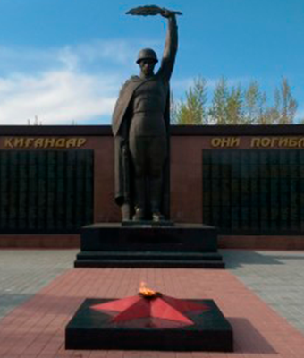

Задание 1. Костанай. Посетить Мемориал «Погибшим в годы Великой Отечественной войны»
Мемориал «Погибшим в годы Великой Отечественной войны» представляет собой величественную скульптуру солдата, держащего в правой руке опущенный автомат, а в вытянутой левой руке лавровую ветвь. Лавр символизирует победу и примирение, т.е. окончание войны. Общая высота фигуры – 7 м. 40 см. Скульптура, выполненная из цемента высокого качества, мраморной крошки, дюралюминия, установлена на трехступенчатый постамент, облицованный гранитными плитами.